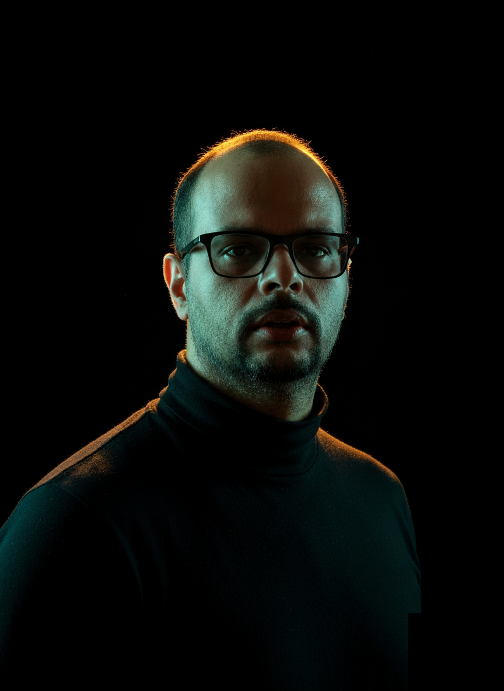

Da lógica dos números à lógica da programação
Professor de Matemática e Informática com mais de 10 anos de sala de aula
Já lecionei em escolas públicas e privadas, cursos preparatórios para concursos e escolas técnicas estaduais — unindo o raciocínio lógico-matemático à prática de programação, do primeiro algoritmo ao primeiro emprego.

Mais de uma década em sala de aula
De escolas públicas a cursos técnicos, sempre conectando teoria e prática.
Início da carreira docente, com turmas de informática básica para o público geral.
Preparação de candidatos a concursos públicos no conteúdo de informática.
Aulas de informática no ensino regular.
Lecionei Lógica de Programação, Banco de Dados e linguagens básicas para criação de sites (HTML, CSS e JavaScript).
Atuação atual no curso técnico em informática.
Duas formações, uma só lógica
Matemática e Informática caminhando juntas — em sala de aula e em código.
Matemática
- Graduação em Matemática FAMASUL · 2004
- Pós-Graduação em Ensino da Matemática FAMASUL
Informática
- Técnico em Informática 2014
- Tecnólogo em Análise e Desenvolvimento de Sistemas conclusão 2025
- Licenciatura em Computação cursando
- Pós-Graduação em Inteligência Artificial 2026
- Pós-Graduação em Segurança da Informação 2026
Quem ensina programação, também programa
Além da sala de aula, aplico na prática o que ensino — desenvolvendo e colaborando em projetos reais com as tecnologias que faço parte do dia a dia dos meus alunos.
- Microsoft Office Avançado (Word, Excel, PowerPoint)
- Inglês básico
- Resolução de problemas
- HTML5, CSS3, Bootstrap, Tailwind, JavaScript, Node.js e MySQL
Matemática Aplicada interativa
Criando soluções para problemas reais da matemática, uma opção interativa para auxiliar os professores e ajudar a aprendizagem dos alunos.


Levando tecnologia para onde ela ainda não chegou
Ministrei minicursos na escola municipal de Cucaú, distrito de Rio Formoso, apresentando aos alunos a introdução à programação com Scratch — uma ferramenta que ensina lógica de programação através de blocos de encaixe, sem precisar escrever código.
Precisa de um professor de Matemática ou Informática?
Aulas particulares, preparação para concursos ou parceria com instituições de ensino — vamos conversar.